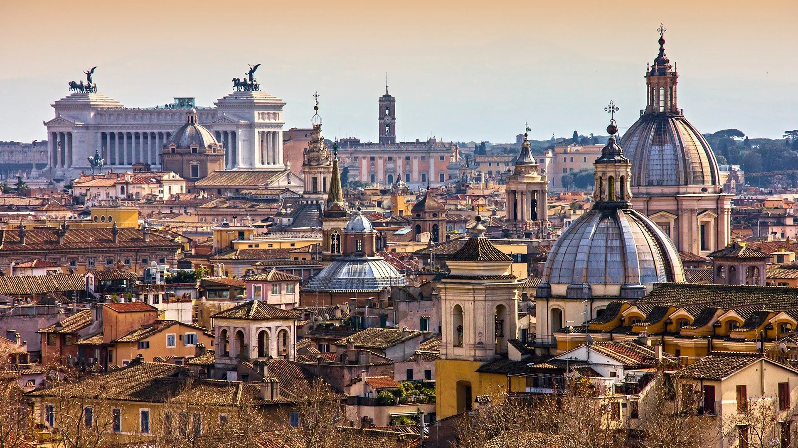
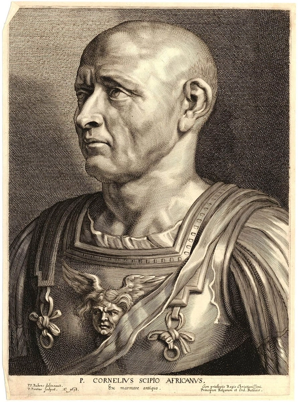

The fight for Rome
Hannibal went on a rampage through Rome. He constantly out planned, outmaneuvered, and outfought his enemies, and spent many years in Rome ravaging the Empire. He won countless battles and used military strategy concepts that would not become standard doctrine for hundreds of years. In many battles, he was outnumbered as many as two to one, yet he always either achieved victory or escaped to resupply. This slowly drained Rome's resources and massively drained their manpower. It is believed that as many as twenty percent of the military-age male population of Rome died in just the Battle of Cannae, almost seventy thousand Roman soldiers dead in a day.
Hannibal's Defeat
The last major battle of the Second Punic War did not happen in Rome; it happened on Carthaginian soil. Scipio Africanus, a Roman Consul, believed the only way to beat Hannibal was to force him into open battle, so he attacked Carthage. The Carthaginians took the bait; they recalled Hannibal home and let these two generals have one final battle to determine the fate of the Second Punic War. The Battle of Zama pitted two of the greatest military minds of the time, and possibly history, against each other. Hannibal tried his hardest but was ultimately defeated by his much younger and more aggressive opponent. With that battle, the war was over; Rome won, and over the next couple of decades, Carthage would shrink more and more, until it eventually ceased to exist when Rome burned it down at the end of the Third Punic War about fifty years later.
